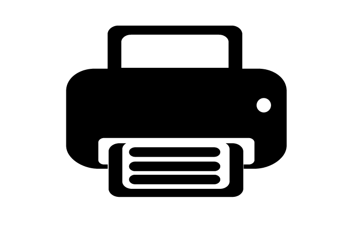

172.20.10.12
Welcome to Embedded Web Server
The embedded Web server (EWS) is a web tool that allows you to view product status information, change settings, and manage device from your computer using a Web browser.
For more information, see the electronic User Guide available on your computer after you install the software. (The user guide is also available online at www.hp.com/support)
Status
Status: Ready
Estimated Ink Levels:
Cyan: 27%
Magenta: 50%
Yellow: 42%
Black: 28%
Setup
Set up common features of your device.
Digital Filing:
- Scan to Network Folder Setup
- Scan to E-mail Setup
- Digital Fax Setup
Connectivity:
- Network Settings
- Wireless (802.11) Setup Wizard
- Bluetooth Settings
Manage
Manage settings for common features of your device.
Security:
- Admin Password Setup
Contacts:
- Fax Speed-dial
- E-mail Address Book
Reports:
- Usage Tracking
- Fax Log
- Alerts
Maintenance:
- Diagnostic Tools
- Backup and Restore Settings
Setup
Help
Preferences
Tools
Power Management
Network
Bluetooth
Overview
Status
Applications
EWS Settings
Webscan
Webscan lets you scan photos and documents from your device to your computer using a Web browser, even if you choose not to install the device software on your computer.